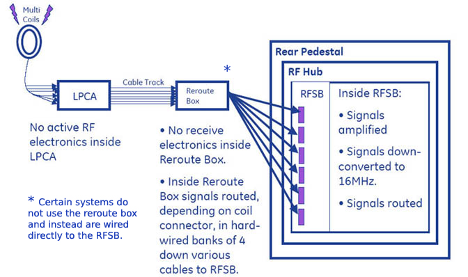
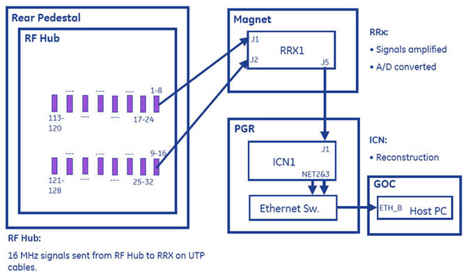

Proprietary to General Electric
Direction 5670000, Rev# 1
Optima MR450w 1.5T Service Methods
Module Version 4.0, Version Date 11/13/09
Proprietary to General Electric |
The following describes Receive Chain Theory.
Receive chain takes the low-level analog signal from the multi-coils to the RF Hub where it is amplified up to the receiver, which converts it into a digital signal that is then converted in the PGR to useable data seen on the operator monitor.
MR signals are at 128 Mhz for 3.0T and 64Mhz for 1.5T, and the signals travel on standard coaxial cables from the Multi-Coils through the LPCA to the Reroute Box. The signals are then routed to the RFSB where the signal is converted to 16 Mhz. The RF Hub contains:
RF Switch Board
Multi-Coil Driver Board
Control Board
Power Distribution Board
Illustration 1: Signal Flow from Multi-Coils to Rear Pedestal

The 16 Mhz signal travels between the RF Hub and receiver module via 37 pin Sub-D cables. The Receiver Module RRx1 contains A/D converters that digitize each of the 16 receive channels, provides digital tuning, pass band filtering and formats the data for transfer out of the scan room over a high-speed fiber optic link.
Illustration 2: Signal Flow from Rear Pedestal to GOC
